1064A24 variable geometry turbocharger exhaust manifold assembly sleeveleading to exhaust pipe r r
- Path
- Procedures > 10 ENGINE > 1064 ENGINE TURBOCHARGING SYSTEM > 1064A turbo charger assembly > 1064A24 variable geometry turbocharger exhaust manifold assembly sleeveleading to exhaust pipe r r
- Kind
- repair procedure (removal / refitting; the operation number is the code)
- Applies to
- engines: 1.9 JTD 16v, 2.4 JTD 20v; all production periods
- Interactive page
- https://sloeber94.github.io/elrnDB-a156/en/#/3237863
Applies to: engines: 1.9 JTD 16v; all production periods
 Removing
Removing
 Refitting
RefittingPosition the vehicle on the ramp
Proceed with removal 1016A10 sound-proofing cover - r + r
Proceed with removal 7055B54 under-engine guard - r r
Proceed with removal 1088D24 rigid pipe for coolant inlet to water pump - r + r
1. Undo the bolts (1a) and remove the exhaust manifold heat shield (1b).
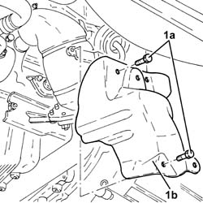
Applies to: engines: 1.9 JTD 16v; all production periods
1. Undo the nuts (1a) and remove the upper exhaust manifold heat shield (1b).
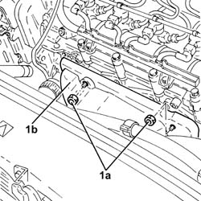
Applies to: engines: 1.9 JTD 16v; all production periods
1. Undo the nuts fixing the front section of the exhaust pipe to the catalytic pre-converter.
2. Undo the nuts fixing the front section of the exhaust pipe to the catalytic converter.
3. Remove the front exhaust pipe section complete with seals.
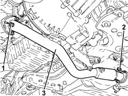
Applies to: engines: 1.9 JTD 16v; all production periods
1. Disconnect the vacuum pipe from the turbocharger variable geometry control actuator.
2. Loosen the band and disconnect the air supply hose between the turbocharger and the heat exchanger, turbocharger side.
3. Loosen the band and disconnect the corrugated air intake sleeve to the turbocharger, turbocharger side.
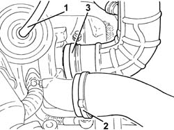
Applies to: engines: 1.9 JTD 16v; all production periods
1. Undo the bolts (1a) and the nuts (1b) fixing the catalytic preconverter mounting bracket.
2. Undo the bolts securing the engine oil return pipe from the turbocharger, engine crankcase side.
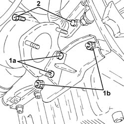
Applies to: engines: 1.9 JTD 16v; all production periods
1. Undo the connector (1a) and disconnect engine oil supply pipe to the turbocharger (1b), crankcase side.
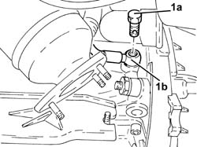
Applies to: engines: 1.9 JTD 16v; all production periods
1. Loosen the collar (1a) and remove the catalytic preconverter (1b).
2. Keep the catalytic preconverter mounting bracket.
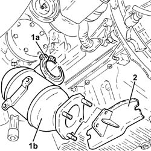
Applies to: engines: 1.9 JTD 16v; all production periods
1. Undo the nuts (1a) and remove the variable geometry turbocharger assembly (1b) complete with exhaust manifold (1c).
2. Remove the exhaust manifold gasket.
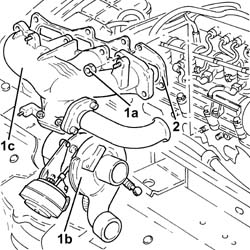
Applies to: engines: 1.9 JTD 16v; all production periods
Refitting
Removing1. Place an exhaust manifold gasket in the housing.
2. Place the variable geometry turbocharger assembly (2a) complete with exhaust manifold (2b) back in its housing and secure it using the nuts (2c).
 | Fastening | Component | Ø | Value (daNm) |
|---|---|---|---|---|
2c | Nut | EXHAUST MANIFOLD/S | M8 | (Cylinder head side) 2.3 ÷ 3.3 |
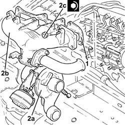
Applies to: engines: 1.9 JTD 16v; all production periods
Place the catalytic preconverter complete with mounting back in its housing and fasten it to the turbocharger using the collar.
1. Connect the engine oil delivery pipe to the turbocharger (1a), crankcase side, and tighten the connector (1b) to the recommended torque.
| Fastening | Component | Ø | Value (daNm) |
|---|---|---|---|---|
1b | Connector | OIL DELIVERY PIPE TO TURBO | M12 | (Engine crankcase side) 1.4 ÷ 1.7 |
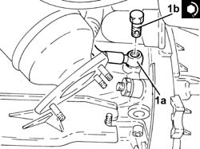
Applies to: engines: 1.9 JTD 16v; all production periods
Tighten the bolt fixing the enigne oil return pipe from the turbocharger, engine crankcase side.
Tighten the bolts and the nuts fixing the catalytic preconverter mounting bracket.
Connect the corrugated air intake sleeve to the turbocharger, turbocharger side, and tighten the band.
Connect the air supply hose between the turbocharger and the heat exchanger, turbocharger side, and secure with a band.
Connect the vacuum pipe from the turbocharger variable geometry control actuator.
1. Place the front section of the exhaust pipe with gaskets back in its housing.
2. Tighten the nuts securing the exhaust pipe front section to the catalytic converter to the specified torque.
| Fastening | Component | Ø | Value (daNm) |
|---|---|---|---|---|
2 | Nut | PRE-CAT CONVERTOR/CAT CONVERTOR PIPE | M8 | (Catalytic converter side) 2.3 ÷ 2.8 |
3. Tighten the nuts fixing the front section of the exhaust pipe to the catalytic preconverter to the recommended torque.
| Fastening | Component | Ø | Value (daNm) |
|---|---|---|---|---|
3 | Nut | PRE-CAT CONVERTOR/CAT CONVERTOR PIPE | M8 | (Catalyitic preconverter side) 2.3 ÷ 2.8 |
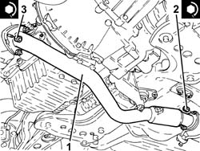
Applies to: engines: 1.9 JTD 16v; all production periods
Place the upper exhaust manifold heat shield back in its housing and fix it using the nuts.
Place the lower exhaust manifold heat shield back in its housing and fix it using the bolts.
Proceed with refitting 1088D24 rigid pipe for coolant inlet to water pump - r + r
Proceed with refitting 7055B54 under-engine guard - r r
Refill the engine cooling system with coolant 0010T20 coolant change .
Proceed with refitting 1016A10 sound-proofing cover - r + r
Position the vehicle on the ramp
Applies to: engines: 2.4 JTD 20v; all production periods
Removing
RefittingPosition the vehicle on the ramp.
Proceed with removal 1016A10 sound-proofing cover - r + r .
Proceed with removal 1048A50 air inlet pipe to turbo charger - r + r .
Proceed with removal 7055B54 under-engine guard - r r .
Proceed with removal 1076B70 exhaust pipe between pre-catalytic converter and catalytic converter - r r .
Proceed with removal 1080B40 catalytic pre-converter - r r .
1. Undo the nuts (1a) and remove the shield (1b).
2. Loosen the band and disconnect the engine oil return pipe from the turbocharger, turbocharger side.
3. Undo the connector (3a) and disconnect the engine oil supply pipe to the turbocharger (3b), engine block side.
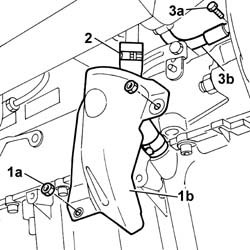
Applies to: engines: 2.4 JTD 20v; all production periods
1. Undo the bolts (1a), loosen the collar (1b) and remove the exhaust gas inlet pipe to the water/exhaust gas heat exchanger for the E.G.R. system (1c).
Remove the gaskets.
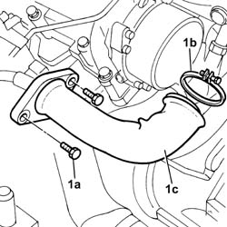
Applies to: engines: 2.4 JTD 20v; all production periods
1. Loosen the band and disconnect the air inlet hose to the turbocharger, turbocharger side.
2. Loosen the band and disconnect the air supply hose between the turbocharger and the heat exchanger, turbocharger side.
3. Disconnect the vacuum pipe from the turbocharger variable geometry control actuator.
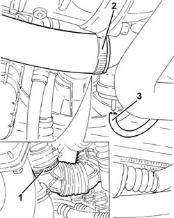
Applies to: engines: 2.4 JTD 20v; all production periods
Undo the bolts securing the vacuum pipe to the coolant inlet rigid pipe to the water pump.
1. Loosen the bands and disconnect the coolant pipes connected to the coolant rigid inlet pipe to the coolant pump.
2. Undo the bolts (2a) and remove the water pump rigid inlet pipe (2b) complete with gasket.
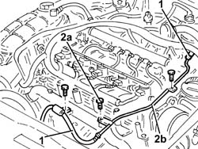
Applies to: engines: 2.4 JTD 20v; all production periods
1. Undo the nuts fixing the exhaust manifold to the cylinder head.
2. Undo the bolt on the cylinder head reinforcement bracket.
3. Remove the variable geometry turbocharger assembly complete with exhaust manifold.
Remove the exhaust manifold gasket.
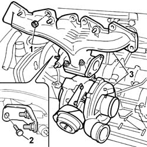
Applies to: engines: 2.4 JTD 20v; all production periods
Refitting
RemovingPlace an exhaust manifold gasket in the housing.
1. Refit the variable geometry turbocharger assembly in its seating complete with exhaust manifold.
2. Tighten the nuts securing the exhaust manifold to the cylinder head to the specified torque.
| Fastening | Component | Ø | Value (daNm) |
|---|---|---|---|---|
2 | Nut | EXHAUST MANIFOLD/S | M8 | (Cylinder head side) 2.3 ÷ 2.8 |
3. Tighten the bolt on the cylinder head reinforcement bracket to the specified torque.
| Fastening | Component | Ø | Value (daNm) |
|---|---|---|---|---|
3 | Bolt | EXHAUST MANIFOLD RETAINING BRACKET | M8 | (Cylinder head side) 2.3 ÷ 2.8 |
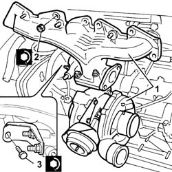
Applies to: engines: 2.4 JTD 20v; all production periods
Place the water pump rigid inlet pipe, complete with gasket, back in its housing and secure it using the bolts.
Connect the coolant pipes connected to the coolant inlet rigid pipe to the water pump and tighten the bands.
Tighten the bolts securing the vacuum pipe to the coolant rigid inlet pipe to the water pump.
Connect the vacuum pipe from the turbocharger variable geometry control actuator.
Connect the air supply hose between the turbocharger and the heat exchanger, turbocharger side, and secure with a band.
Connect the air intake sleeve to the turbocharger, turbocharger side, and tighten the band.
Place the E.G.R.system water/exhaust gas heat exchanger exhaust gas inlet pipe back in its housing complete with gaskets, and fasten it with the collar and bolts.
Connect the engine oil delivery pipe to the turbocharger, crankcase side, and tighten the connector.
Connect the engine oil return pipe from the turbocharger, turbocharger side, and tighten the band.
Refit the shield in its housing and fix it with the nuts.
Proceed with refitting 1080B40 catalytic pre-converter - r r .
Proceed with refitting 1076B70 exhaust pipe between pre-catalytic converter and catalytic converter - r r .
Proceed with refitting 7055B54 under-engine guard - r r .
Proceed with refitting 1048A50 air inlet pipe to turbo charger - r + r .
Proceed with refitting 1016A10 sound-proofing cover - r + r .
Refill the engine cooling system with coolant 0010T20 coolant change .
Remove the car from the ramps.
Topics linked from this page (7)
- 0010T20 coolant change
- 1016A10 sound-proofing cover - r + r
- 1048A50 air inlet pipe to turbo charger - r + r
- 1076B70 exhaust pipe between pre-catalytic converter and catalytic converter - r r
- 1080B40 catalytic pre-converter - r r
- 1088D24 rigid pipe for coolant inlet to water pump - r + r
- 7055B54 under-engine guard - r r